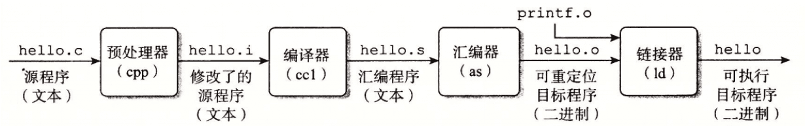
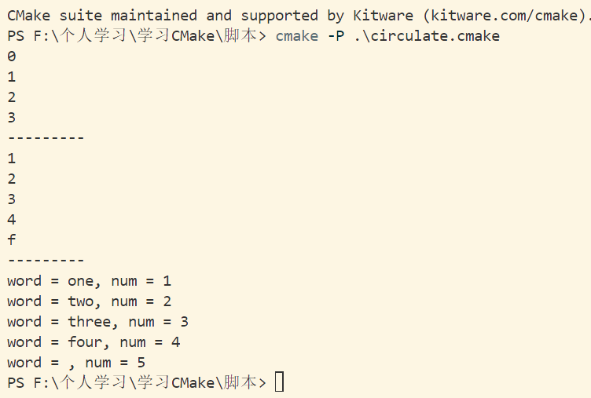
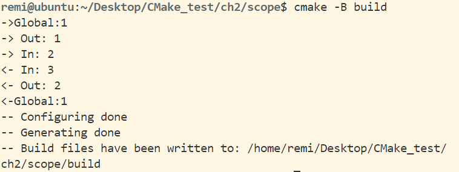

C/C++ | 构建
前言
最近在处理Linux交叉编译，多工程结合的问题，决定从头认真学一下构建工具Makefile、CMAKE，此文为记录,学习路径为gcc->Makeflie->CMAKE。
编译原理
首先，所有的文件本质上都是一串字符串，它的后缀只是方便人类，对计算机并不是那么重要（尤其是Linux），完整的编译过程如下：

由上图易知主要有四个步骤：
- 预处理(*.i -E)：进行字符段的替换，如include、define
- 编译(*.s -S)：将文本文件翻译为汇编文件
- 汇编(*.o -C)：将.s文件转化为可重定位目标程序（relocatable object program），或者说机器语言
- 链接(可执行文件)：链接所有.o文件，产生最终的可执行文件
GCC
GCC（GNU Compiler Collection），是一个开源编译软件集合，在官方手册中能看到其最权威的介绍。
常见组成部分：
- g++：默认链接标准C++库，同时兼容C
- gcc：编译C
常见软件：
- ar： 这是一个程序，可通过从文档中增加、删除和析取文件来维护库文件。通常使用该工具是为了创建和管理连接程序使用的目标库文档。该程序是 binutils 包的一部分
- ld： GNU 连接程序。该程序将目标文件的集合组合成可执行程序。该程序是 binutils 包的一部分
GCC默认头文件搜索路径：1
echo | gcc -v -x c -E -
在遇到头文件、库找不到的时候，可以使用此命令检查
C语言
编译一个C语言程序，你可能看到这些后缀：
- .a：静态库（Static object library(archive)）
- .so：动态库/运行时库（Shared object library）
- .c
- .h
- .i
- .s
- .o
例程：1
2
3
4
5
6
7
int main(int argc, char** argv)
{
printf("Hello World");
return 0;
}
可以在命令行中键入以下指令，两部分是等效的，但拆分过程有助于理解，作为参数的文件名字可有多个，一起执行1
2
3
4
5
6gcc -E main.c -o main.i # 仅预处理
gcc -S main.c -o main.s # 预处理并产生汇编文件
gcc -c main.c # 预处理、汇编、编译成.o
gcc main.o -o exec # 生成目标可执行文件
------------------------
gcc main.c -o exec # 其实可以直接一步到位
静态库
- 编译为可重定位目标程序
1
gcc -c xxx.c
- 编译静态库
约定俗成静态库名字：lib+库名，如liboperation.a1
ar -r [lib自定义库名.a] [.o] [.o]
- 使用(链接)
直接使用一步到位的命令：从上面的过程可以看出，所谓的静态库就是预先编译了一些.c源程序，打包成一个库，方便我们调用和管理。1
gcc main.c liboperation.a -o exec
动态库
- 同样要编译出可重定位目标程序，但这次要加个参数-fpic
1
gcc -c -fpic xxx.c
- 编译动态库
1
gcc -shared [.o] [.o] -o [lib自定义库名.so]
- 链接
1
gcc [.c] -o [可执行文件名] -l[库名] -Wl,rpath=[库路径]
C++
编译一个C++语言程序，你可能看到这些后缀：
- .a：静态库（Static object library(archive)）
- .c .cc .cp .cpp .cxx .c++
- .h：C/C++都可以用
- .li
- .s
- .o
至于其他部分，和C部分一模一样，只是gcc变为了g++,同时g++是向C兼容的，毕竟C可以看作C++的一个子集Makefile
- GNU Make 官方网站：https://www.gnu.org/software/make/
- GNU Make 官方文档下载地址：https://www.gnu.org/software/make/manual/
- Makefile Tutorial：https://makefiletutorial.com/
make 指令会在当前目录下找到一个名字叫Makefile或makefile的文件，如果找到，它会找文件中第一个目标文件（target），并把这个文件作为最终的目标文件，如果 target 文件不存在，或是 target 文件依赖的 .o 文件(prerequities)的文件修改时间要比 target 这个文件新，就会执行后面所定义的命令 command 来生成 target 这个文件，如果 target 依赖的 .o 文件（prerequisties）也存在，make 会在当前文件中找到 target 为 .o 文件的依赖性，如果找到，再根据那个规则生成 .o 文件基本格式
不得使用空格替代Tab，makefile语法对缩进有严格规定1
2targets: prerequisties
[Tab键] command
.PHONY：伪目标，由上面流程可知，目标现存文件，如果文件存在则不会执行
变量
有三种定义变量的方式，取变量使用$()
函数
示例
1 |
CMAKE
CMake是一个构建工具，相比于其他的编程语言，CMake更复杂，也更关注底层细节，正是由于CMake的出现，使得C++真正实现了跨平台。
学习的必要性
- CMake是学习C/C++的必经之路
- CMake不仅可以管理C/C++
- 支持生成几乎所有主流IDE的项目
- 真正的跨平台：支持Windows、Linux、macOS、Cygwin等
缺点也很明显，作为一个高级工具，CMake是一门语言，具有一定的学习成本，而且版本的更新差别比较大。推荐至少使用版本3.20。
Windows中使用CMake构建
CMake官网,在Windows下，默认使用的编译器是MSVC，使用cmake --help可以查看本平台的Generators，带星号的就是默认的，例如我的是* Visual Studio 17 2022,一般来说我们更经常使用的是MinGW Makefiles1
2
3
4
5cmake --version
cmake -B build_msvc
cmake --build build_msvc
cmake -B build_MinGw -G "MinGW Makefiles" 1
2
3cmake_minimum_required(VERSION 3.16.2)
project(Hello)
add_executable(Hello hello.cpp)1
2
3
4
5
6
7
int main(int argc, char **argv)
{
std::cout << "hello" << std::endl;
return 0;
}
在Linux中构建
- 使用包管理工具安装
1
sudo apt-get install cmake
- 编译源码安装
下载源码，自行编译结果1
2
3
4
5
6
7
8sudo apt install build-essential
sudo wget https://cmake.org/files/v3.28/cmake-3.28.0.tar.gz
tar -zxvf cmake-3.28.0.tar.gz
cd cmake-3.28.0
./configure
sudo make
sudo make install
cmake --version使用
与在Windows中使用的指令一致,在生成后可以发现build目录下还有个CMakeCache.txt文件，这是CMake的缓存机制，如果发现定义的变量没有及时生效，可以rm -rf ./build，重新cmake
CMake的语法
不通过CMakeLists.txt来运行CMake：可创建xxx.cmake,再使用参数-P直接运行cmake脚本，一般不这样用，但这样有益于我们学习CMake的语法。1
2
3
4
5
6cmake_minimum_required(VERSION 3.16)
message("hello
world")
message(${CMAKE_VERSION})1
2touch first.cmake
cmake -P first.cmake
变量
变量的种类：CMake预定义的、自定义，变量存储的都是字符串，对于变量的操作有：set、unset以及list方法。1
2
3
4
5
6
7
8
9
10
11
12
13
14
15
16
17
18
19
20
21
22
23
24
25
26
27
28
29
30
31
32
33
34
35
36
37
38
39
40
41
42
43
44
45
46
47
48
49
50cmake_minimum_required(VERSION 3.16)
# 设置变量
set(var1 "test") # 不加双引号也一样，有的系统使用双引号还要加反义字符
message(${var1})
message(--------)
# 设置多个值
set(Listvalue a1 a2)
message(${Listvalue})
set(Listvalue a3;a4) # 等同上面这个例子，也说明了变量可覆盖
message(${Listvalue})
message(--------)
# 查询\设置环境变量，如：PATH
message($ENV{PATH})
set(ENV{CXX} "g++")
message($ENV{CXX})
message(--------)
# 删除变量
unset(ENV{CXX})
# message($ENV{CXX}) # 由于变量未定义，解除注释运行会报错
# List方法
set(Listvalue a1 a2 a3) # 对比
message(${Listvalue})
unset(Listvalue)
## 追加项
list(APPEND port p1 p2 p3)
message(${port})
## 查长度
list(LENGTH port len) # 操作名称，操作对象，返回的变量
message(${len})
## 查index
list(FIND port p2 index) # 操作名称，操作对象，查找的值，返回的变量
message(${index})
## 删除
list(REMOVE_ITEM port p1) # 操作名称，操作对象，删除的项
message(${port})
## 插入项
list(APPEND port p5)
list(INSERT port 2 p4) # 插入项
message(${port})
## 反转
list(REVERSE port)
message(${port})
## 排序：按照ASCII码排序
list(SORT port)
message(${port})
流程控制
- 条件控制
1
2
3
4
5
6
7
8
9
10
11
12
13
14
15
16
17
18
19
20
21
22
23
24
25
26
27
28
29
30
31
32
33
34
35
36
37
38
39
40
41
42
43
44
45
46cmake_minimum_required(VERSION 3.16)
set(flag TRUE)
# set(flag FALSE)
#条件控制
if(flag)
message(ok)
else()
message(false)
endif()
# 取反
if(NOT flag)
message(ok)
else()
message(false)
endif()
# 或门
if(NOT flag OR flag)
message(ok)
else()
message(false)
endif()
# 与门
if(NOT flag AND flag)
message(ok)
else()
message(false)
endif()
# 大小判断
if(1 LESS 2)
message("小于")
else()
message("大于")
endif()
if("ok" LESS 233)
message("less") # 条件语句的比较操作默认是基于字符串的字典序
else()
message("larger")
endif()
if(1 EQUAL "1")
message("EQUAL") # 会输出等于，这是因为存储的都是字符串
endif() - 循环
在CMake中实现循环有两种方法，分别是foreach和while，其中比较推荐for，因为相比较while具有更确定的执行次数。1
2
3
4
5
6
7
8
9
10
11
12
13
14
15
16
17
18
19
20
21
22
23cmake_minimum_required(VERSION 3.18)
foreach(var RANGE 3)
message(${var})
endforeach(var RANGE 3)
message(---------)
set(My_List 1 2 3)
foreach(var IN LISTS My_List ITEMS 4 f) # 遍历并且追加
message(${var})
endforeach(var IN LISTS My_List 4 f)
message(---------)
# zip,拼接,注意这是3.18版本才引入的特性
set(L1 one two three four)
set(L2 1 2 3 4 5)
foreach(num IN ZIP_LISTS L1 L2)
message("word = ${num_0}, num = ${num_1}")
endforeach(num IN ZIP_LISTS L1 L2)
函数
定义函数的语法1
2
3
4
5
6
7
8
9
10
11
12
13
14
15cmake_minimum_required(VERSION 3.16)
function(My_func FirstArg)
message("MyFunc Name: ${CMAKE_CURRENT_FUNCTION}")
message("FirstArg :${FirstArg}")
set(FirstArg "New")
message("FirstArg again:${FirstArg}")
message("ARGV0 ${ARGV0}")
message("ARGV1 ${ARGV1}")
message("ARGV2 ${ARGV2}") # 可以传多个，与接受不匹配也可以调用
endfunction(My_func FirstAg)
set(FirstArg "first value")
My_func(${FirstArg} "value") # 可以传多个，与接受不匹配也可以调用
message("FirstArg :${FirstArg}") # 体现了函数的作用域范围
作用域
CMake有两种作用域：
- 函数作用域
- 文件夹作用域
使用add_subdirectory()命令执行嵌套目录中的CMakeLists.txt列表文件时，子CMakeLists会继承父CMakeLists的变量，可使用。1
2
3
4
5
6
7
8
9
10
11
12
13
14
15
16
17
18
19
20
21cmake_minimum_required(VERSION 3.16)
project(scope)
function(Outfunc)
message("-> Out: ${Var}")
set(Var 2)
Infunc()
message("<- Out: ${Var}")
endfunction(Outfunc)
function(Infunc)
message("-> In: ${Var}")
set(Var 3)
message("<- In: ${Var}")
endfunction(Infunc)
set(Var 1)
message("->Global:${Var}")
Outfunc()
message("<-Global:${Var}")宏
其实不推荐写宏，不方便阅读，因为它过于灵活了，会读就行，CMake的宏也相当于替换，但是有类似函数的传参。1
2
3
4
5
6
7
8
9
10
11
12
13
14
15
16
17cmake_minimum_required(VERSION 3.16)
# 使用宏相当于替换
macro(Test myVar)
set(myVar "new value")
message("argument: ${myVar}")
endmacro(Test myVar)
set(myVar "first value")
message("myVar: ${myVar}")
Test("value")
message("myVar: ${myVar}")
# 打印顺序为：
# myVar: first value
# argument: value 这是因为是传参，不是变量
# myVar: new valueCMake构建项目的方式
直接写入源码路径的方式
适用于小工程，直接使用add_executable,也是最简单的方式。1
2
3
4
5├── animal
│ ├── dog.cpp
│ └── dog.h
├── CMakeLists.txt
└── main.cpp1
2
3
4
5cmake_minimum_required(VERSION 3.16)
project(Animal CXX)
add_executable(Animal main.cpp animal/dog.cpp)1
2
3
4
5
6
7
8
9
10
11
12
int main(int argc, char **argv)
{
std::cout << "hello world" << std::endl;
Dog dog;
std::cout << dog.barking() << std::endl;
return 0;
}1
2
3
4
5
6
std::string Dog::barking()
{
return std::string("dog wang wang");
}1
2
3
4
5
6
7
8
class Dog
{
public:
std::string barking();
};调用子目录CMake脚本的方法
使用include方法可以引入子目录中的cmake后缀的配置文件，将配置加入add_executable中即可，可以使用子CMakeLists的变量，这种方法类似Makefile的处理方法，在CMake中并不常用。1
set(animal_sources animal/dog.cpp animal/cat.cpp)
1
2include(animal/animal.cmake)
add_executable(Animal main.cpp $animal_sources)CMakeList嵌套（最常用）
- target_include_directories()
- target_link_libraries()
- add_subdirectory()
- add_library()
Object Libraries
CMake与共享库
OpenCV
OpenCV官方releases下载，opencv_contrib
配置参考：OpenCV安装教程：Windows 安装 Visual Studio + OpenCV + OpenCV contrib